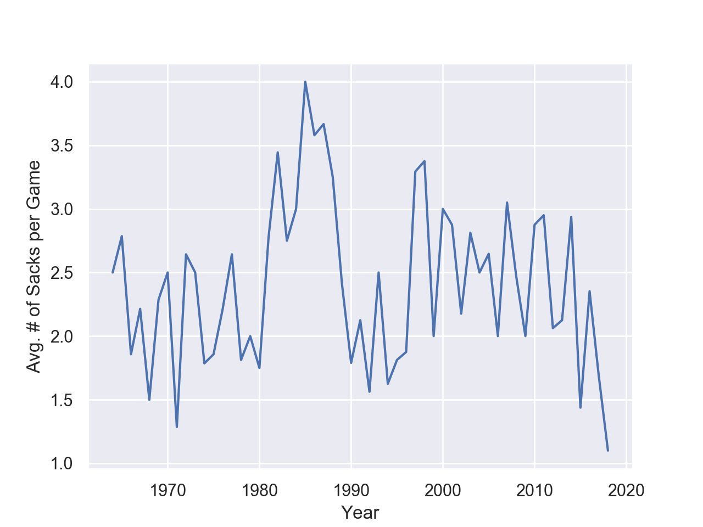
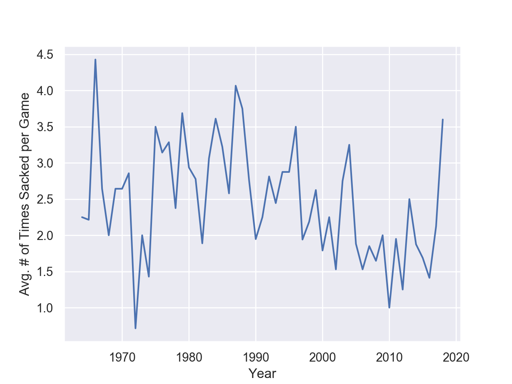
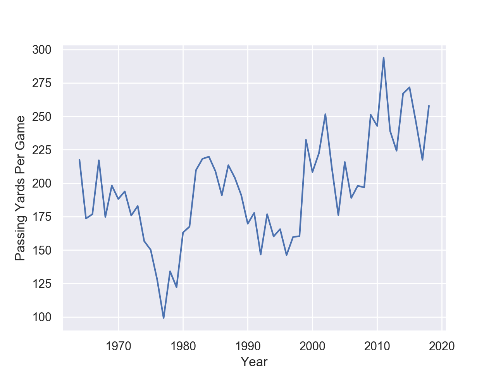
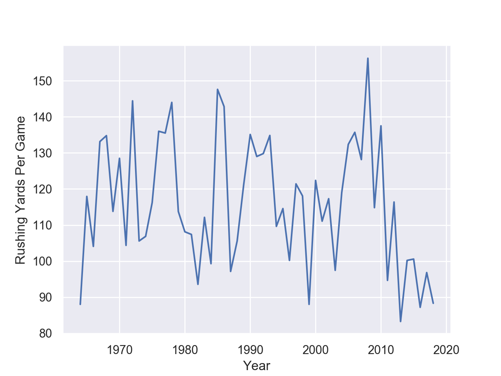
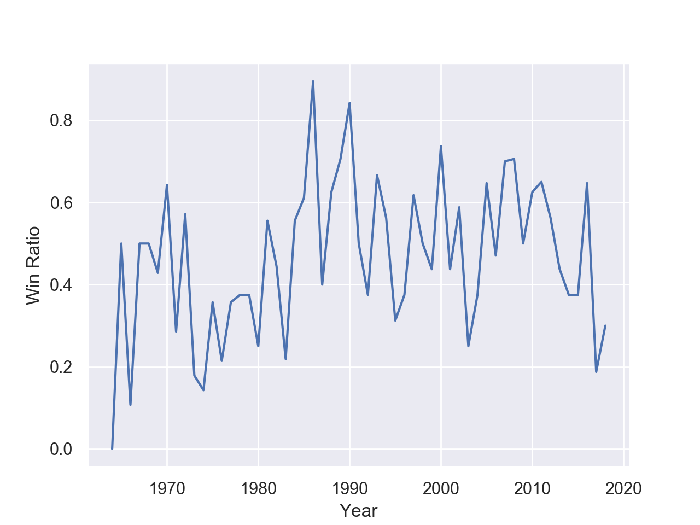
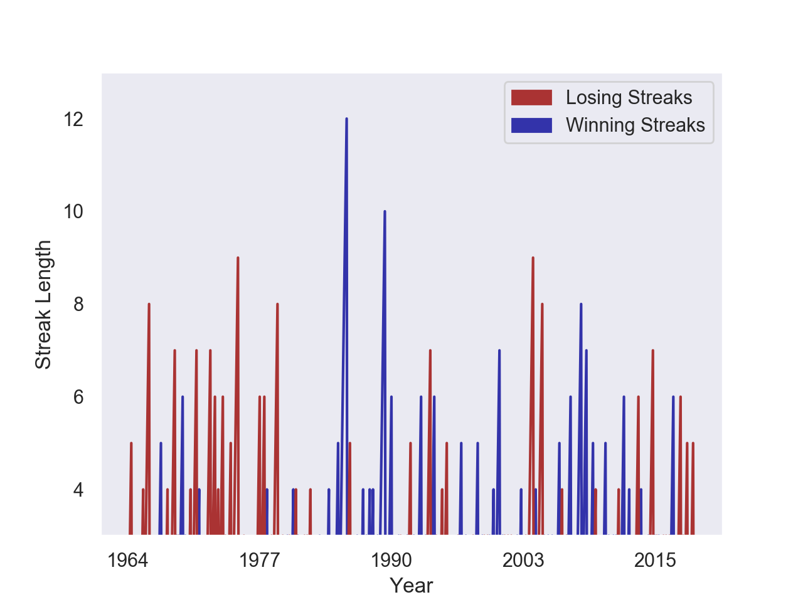
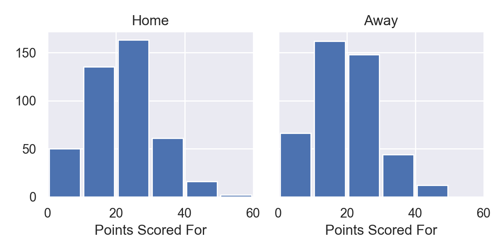
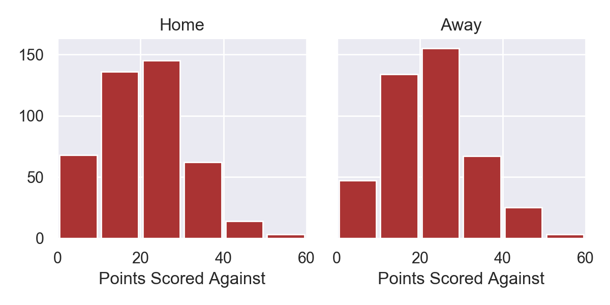
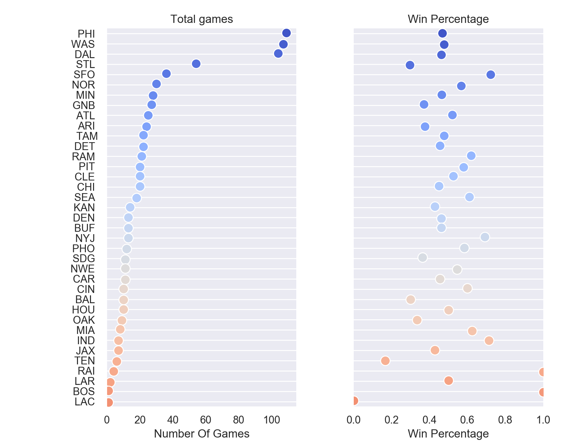

The clear great Giant of the era is Lawrence Taylor, but for all the talk about his ability as a linebacker, do the stats show it? Well, the short answer is: yes.
The ten year spike in NYG sacks in the 80's lines up perfectly with L.T.'s career. However, since then the tables have turned, and it seems every non-Giant linebacker is practically an L.T. when facing the Giant O.L., right?
Sadly, it seems that Eli gets sacked almost as often as L.T. sacked the opposing quarterback in his prime. Not great news for the Giants.
On this graph, Eli really does seem like an all-time great: his pass completion is increasing rapidly, setting a new franchise record every couple of years. 
Here, too, Eli really seems to be ahead of any previous Giants QB. Surely, part of this is due to an overall increase in passing yardage per game, but the growth is really impressive.
The Giants rushing game has certainly taken a hit over the last few years:
Maybe Saquon will bring that back up, but maybe it'll take a new offensive line
How have the Giants done as a team? What have been their best and worst runs? Have they been weak on the road? What teams have been particularly tough to beat?
 The longest Giants win streak of your lifetime: a run carrying them through the playoffs and right to their victory over the Denver Broncos for their first Super Bowl Title.
The longest losing streak: a slow nine weeks leading from the beginning of the 1976 season all the way to its culmination: a depressing 9-3 loss at the hands of the Dallas Cowboys
 The Giants defense seems to handle the road well. Their offense? Maybe not so much.
So maybe after fifty-four years of variably played football, it's hard to sum up the team. But hey...
